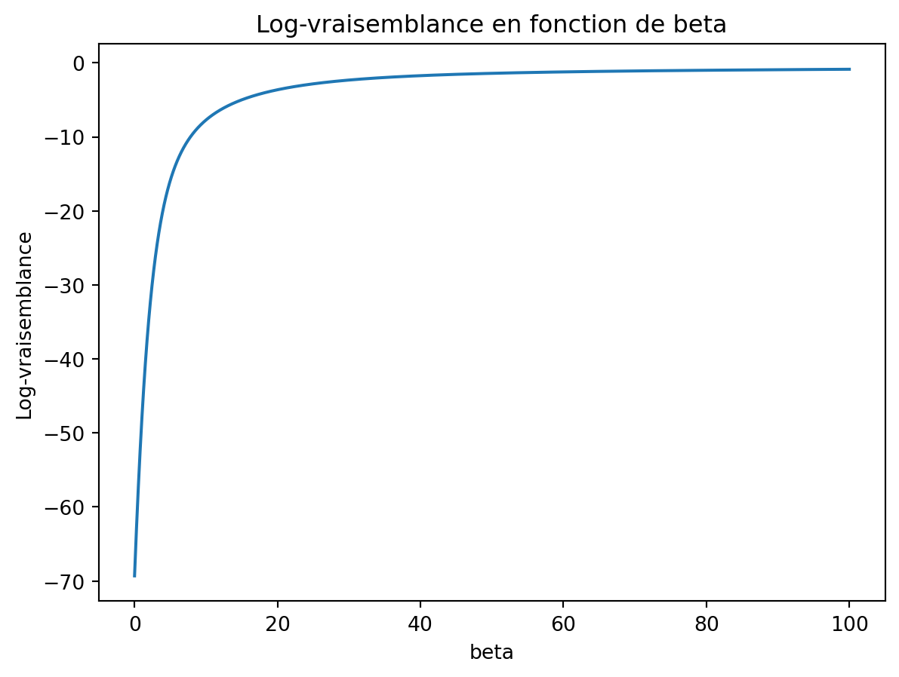
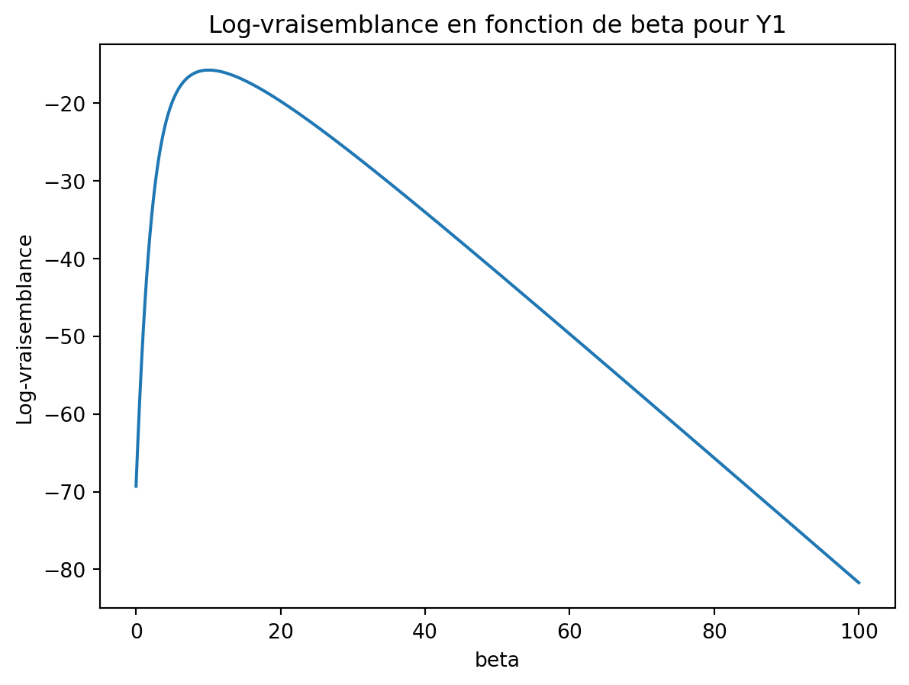

import numpy as np
import pandas as pd
import statsmodels.api as sm
import statsmodels.formula.api as smf
from statsmodels.stats.anova import anova_lm
import matplotlib.pyplot as plt
from scipy.stats import chi2,norm
from scipy import interpolateRégression logistique
Exercice 1 (Questions de cours)
- A
- A
- B
- A
- A
- A
- B
- A
Exercice 2 (Interprétation des coefficients)
On génère l’échantillon.
n = 100 np.random.seed(48967365) X = np.random.choice(['A', 'B', 'C'], size=n, replace=True) Y = np.zeros(n, dtype=int) np.random.seed(487365) Y[X == 'A'] = np.random.binomial(1, 0.95, size=np.sum(X == 'A')) np.random.seed(4878365) Y[X == 'B'] = np.random.binomial(1, 0.95, size=np.sum(X == 'B')) np.random.seed(4653965) Y[X == 'C'] = np.random.binomial(1, 0.05, size=np.sum(X == 'C')) donnees = pd.DataFrame({'Y': Y, 'X': X}) print(donnees.head())Y X 0 1 A 1 0 C 2 1 A 3 1 B 4 0 AOn ajuste le modèle avec les contraintes par défaut.
model1 = smf.logit('Y ~ X', data=donnees).fit() print(model1.summary())Optimization terminated successfully. Current function value: 0.297451 Iterations 7 Logit Regression Results ============================================================================== Dep. Variable: Y No. Observations: 100 Model: Logit Df Residuals: 97 Method: MLE Df Model: 2 Date: Tue, 04 Feb 2025 Pseudo R-squ.: 0.5521 Time: 12:22:32 Log-Likelihood: -29.745 converged: True LL-Null: -66.406 Covariance Type: nonrobust LLR p-value: 1.197e-16 ============================================================================== coef std err z P>|z| [0.025 0.975] ------------------------------------------------------------------------------ Intercept 1.9459 0.478 4.070 0.000 1.009 2.883 X[T.B] 0.5798 0.877 0.661 0.508 -1.138 2.298 X[T.C] -4.6868 0.872 -5.373 0.000 -6.396 -2.977 ==============================================================================On obtient les résultats du test de Wald sur la nullité des paramètres \(\beta_0,\beta_2\) et \(\beta_3\).
On change la modalité de référence.
model2 = smf.logit('Y ~ C(X, Treatment(reference="C"))', data=donnees).fit() print(model2.summary())Optimization terminated successfully. Current function value: 0.297451 Iterations 7 Logit Regression Results ============================================================================== Dep. Variable: Y No. Observations: 100 Model: Logit Df Residuals: 97 Method: MLE Df Model: 2 Date: Tue, 04 Feb 2025 Pseudo R-squ.: 0.5521 Time: 12:22:32 Log-Likelihood: -29.745 converged: True LL-Null: -66.406 Covariance Type: nonrobust LLR p-value: 1.197e-16 ======================================================================================================= coef std err z P>|z| [0.025 0.975] ------------------------------------------------------------------------------------------------------- Intercept -2.7408 0.730 -3.757 0.000 -4.171 -1.311 C(X, Treatment(reference="C"))[T.A] 4.6868 0.872 5.373 0.000 2.977 6.396 C(X, Treatment(reference="C"))[T.B] 5.2666 1.035 5.086 0.000 3.237 7.296 =======================================================================================================On obtient les résultats du test de Wald sur la nullité des paramètres \(\beta_0,\beta_1\) et \(\beta_2\).
On remarque que dans model1 on accepte la nullité de \(\beta_2\) alors qu’on la rejette dans model2. Ceci est logique dans la mesure où ces tests dépendent de la contrainte identifiante choisie. Dans model1 le test de nullité de \(\beta_2\) permet de vérifier si \(B\) à un effet similaire à \(A\) sur \(Y\). Dans model2, on compare l’effet de \(B\) à celui de \(C\). On peut donc conclure \(A\) et \(B\) ont des effets proches sur \(Y\) alors que \(B\) et \(C\) ont un impact différent. Ceci est logique vu la façon dont les données ont été générées.
Tester l’effet global de \(X\) sur \(Y\) revient à tester si les coefficients \(\beta_1,\beta_2\) et \(\beta_3\) sont égaux, ce qui, compte tenu des contraintes revient à considérer les hypothèses nulles :
- \(\beta_2=\beta_3=0\) dans model1 ;
- \(\beta_1=\beta_2=0\) dans model2.
On peut effectuer les tests de Wald ou du rapport de vraisemblance. On obtient les résultats du rapport de vraisemblance avec :
lr_test_model1 = model1.llr lr_test_model2 = model2.llr print("Test de rapport de vraisemblance pour model1:") print(f"LR stat: {lr_test_model1:.4f}, p-value: {model1.llr_pvalue:.4f}") print("\nTest de rapport de vraisemblance pour model2:") print(f"LR stat: {lr_test_model2:.4f}, p-value: {model2.llr_pvalue:.4f}")Test de rapport de vraisemblance pour model1: LR stat: 73.3227, p-value: 0.0000 Test de rapport de vraisemblance pour model2: LR stat: 73.3227, p-value: 0.0000On remarque ici que ces deux tests sont identiques : ils ne dépendent pas de la contrainte identifiante choisie.
Exercice 3 (Séparabilité)
On génère l’échantillon demandé.
np.random.seed(1234) X = np.concatenate([np.random.uniform(-1, 0, 50), np.random.uniform(0, 1, 50)]) Y = np.concatenate([np.zeros(50), np.ones(50)]) df = pd.DataFrame({'X': X, 'Y': Y}) print(df.head())X Y 0 -0.808481 0.0 1 -0.377891 0.0 2 -0.562272 0.0 3 -0.214641 0.0 4 -0.220024 0.0Le graphe s’obtient avec :
beta = np.arange(0, 100, 0.01) def log_vrais(X, Y, beta): LV = np.zeros(len(beta)) for i in range(len(beta)): Pbeta = np.exp(beta[i] * X) / (1 + np.exp(beta[i] * X)) LV[i] = np.sum(Y * X * beta[i] - np.log(1 + np.exp(X * beta[i]))) return LV LL = log_vrais(df['X'], df['Y'], beta)plt.plot(beta,LL) plt.xlabel('beta') plt.ylabel('Log-vraisemblance') plt.title('Log-vraisemblance en fonction de beta') plt.show()
On obtient un avertissement qui nous dit que l’algorithme d’optimisation n’a pas convergé.
model = smf.logit('Y ~ X - 1', data=df).fit() print(model.params)Warning: Maximum number of iterations has been exceeded. Current function value: 0.000000 Iterations: 35 X 1801.824972 dtype: float64/opt/miniconda3/lib/python3.12/site-packages/statsmodels/discrete/discrete_model.py:2385: RuntimeWarning: overflow encountered in exp return 1/(1+np.exp(-X)) /opt/miniconda3/lib/python3.12/site-packages/statsmodels/base/model.py:607: ConvergenceWarning: Maximum Likelihood optimization failed to converge. Check mle_retvals warnings.warn("Maximum Likelihood optimization failed to "Le changement proposé supprime la séparabilité des données. On obtient bien un maximum fini pour cette nouvelle vraisemblance.
Y1 = Y.copy() Y1[0] = 1 LL1 = log_vrais(X, Y1, beta) plt.plot(beta, LL1) plt.xlabel('beta') plt.ylabel('Log-vraisemblance') plt.title('Log-vraisemblance en fonction de beta pour Y1') plt.show()
Exercice 4 (Matrice hessienne) Le gradient de la log-vraisemblance en \(\beta\) est donné par \(\nabla \mathcal L(Y,\beta)=X'(Y-P_\beta)\). Sa \(j\)ème composante vaut \[\frac{\partial\mathcal L}{\partial\beta_j}(\beta)=\sum_{i=1}^nx_{ij}(y_i-p_\beta(x_i)).\]
On peut donc calculer la drivée par rapport à \(\beta_\ell\) : \[\begin{align*} \frac{\partial\mathcal L}{\partial\beta_j\partial\beta_\ell}(\beta)= & \frac{\partial}{\partial\beta_\ell}\left[ \sum_{i=1}^nx_{ij}\left(y_i-\frac{\exp(x_i'\beta)}{1+\exp(x_i'\beta)}\right)\right] \\ =& -\sum_{i=1}^nx_{ij}x_{i\ell}\frac{\exp(x_i'\beta)}{[1+\exp(x_i'\beta)]^2} \\ =& -\sum_{i=1}^nx_{ij}x_{i\ell}p_\beta(x_i)(1-p_\beta(x_i)). \end{align*}\] Matriciellement on déduit donc que la hessienne vaut \[\nabla^2\mathcal L(Y,\beta)=-X'W_\beta X,\] où \(W_\beta\) est la matrice \(n\times n\) diagonale dont le \(i\)ème terme de la diagonale vaut \(p_\beta(x_i)(1-p_\beta(x_i))\). Par ailleurs, comme pour tout \(i=1,\dots,n\), on a \(p_\beta(x_i)(1-p_\beta(x_i))>0\) et que \(X\) est de plein rang, on déduit que \(X'W_\beta X\) est définie positive et par conséquent que la hessienne est définie négative.
Exercice 5 (Modèles avec R) On importe les données :
panne = pd.read_csv("../donnees/panne.txt", sep=" ")
print(panne.head()) etat age marque
0 0 4 A
1 0 2 C
2 0 3 C
3 0 9 B
4 0 7 BLa commande
model = smf.logit('etat ~ age+marque', data=panne).fit()Optimization terminated successfully. Current function value: 0.659124 Iterations 5ajuste le modèle \[\log\left(\frac{p_\beta(x)}{1-p_\beta(x)}\right)=\beta_0+\beta_1x_1+\beta_2\mathsf{1}_{x_2=B}+\beta_3\mathsf{1}_{x_2=C}\] où \(x_1\) et \(x_2\) désigne respectivement les variables age et marque. On obtient les estimateurs avec
print(model.summary())Logit Regression Results ============================================================================== Dep. Variable: etat No. Observations: 33 Model: Logit Df Residuals: 29 Method: MLE Df Model: 3 Date: Tue, 04 Feb 2025 Pseudo R-squ.: 0.04845 Time: 12:22:41 Log-Likelihood: -21.751 converged: True LL-Null: -22.859 Covariance Type: nonrobust LLR p-value: 0.5290 =============================================================================== coef std err z P>|z| [0.025 0.975] ------------------------------------------------------------------------------- Intercept 0.4781 0.833 0.574 0.566 -1.155 2.111 marque[T.B] -0.4194 0.814 -0.515 0.607 -2.015 1.177 marque[T.C] -1.4561 1.054 -1.382 0.167 -3.521 0.609 age 0.0139 0.094 0.148 0.883 -0.170 0.198 ===============================================================================Il s’agit des tests de Wald pour tester l’effet des variables dans le modèle. Pour l’effet de marque, on va par exemple tester \[H_0:\beta_2=\beta_3=0\quad\text{contre}\quad H_1:\beta_2\neq 0\text{ ou }\beta_3\neq 0.\] Sous \(H_0\) la statistique de Wald suit une loi du \(\chi^2\) à 4-2=2 degrés de liberté. Pour le test de la variable age le nombre de degrés de liberté manquant est 1. On retrouve cela dans la sortie
wald_tests = model.wald_test_terms() print("Tests de Wald pour chaque coefficient:") print(wald_tests)Tests de Wald pour chaque coefficient: chi2 P>chi2 df constraint Intercept [[0.3293833811483461]] 0.5660224013616977 1 marque [[1.9306493813691281]] 0.3808595181236274 2 age [[0.02182485519152971]] 0.8825539788968159 1
Le modèle s’écrit \[\log\left(\frac{p_\beta(x)}{1-p_\beta(x)}\right)=\beta_0+\beta_1\mathsf{1}_{x_2=A}+\beta_2\mathsf{1}_{x_2=B}.\]
Le modèle ajusté ici est \[ \log\left(\frac{p_\beta(x)}{1-p_\beta(x)}\right)=\gamma_0+\gamma_1\mathsf{1}_{x_2=B}+\gamma_2\mathsf{1}_{x_2=C}. \] Par identification on a \[ \begin{cases} \beta_0+\beta_1=\gamma_0 \\ \beta_0+\beta_2=\gamma_0+\gamma_1 \\ \beta_0=\gamma_0+\gamma_2 \\ \end{cases} \Longleftrightarrow \begin{cases} \beta_0=\gamma_0+\gamma_2 \\ \beta_1=-\gamma_2 \\ \beta_2=\gamma_1-\gamma_2 \\ \end{cases} \Longrightarrow \begin{cases} \widehat\beta_0=-0.92 \\ \widehat\beta_1=1.48 \\ \widehat\beta_2=1.05 \\ \end{cases} \] On peut retrouver ces résultats avec
model1 = smf.logit('etat ~ C(marque, Treatment(reference="C"))', data=panne).fit() model1.summary()Optimization terminated successfully. Current function value: 0.659456 Iterations 5Logit Regression Results Dep. Variable: etat No. Observations: 33 Model: Logit Df Residuals: 30 Method: MLE Df Model: 2 Date: Tue, 04 Feb 2025 Pseudo R-squ.: 0.04798 Time: 12:22:41 Log-Likelihood: -21.762 converged: True LL-Null: -22.859 Covariance Type: nonrobust LLR p-value: 0.3340 coef std err z P>|z| [0.025 0.975] Intercept -0.9163 0.837 -1.095 0.273 -2.556 0.724 C(marque, Treatment(reference="C"))[T.A] 1.4759 1.045 1.412 0.158 -0.573 3.525 C(marque, Treatment(reference="C"))[T.B] 1.0498 0.984 1.067 0.286 -0.878 2.978
Il y a interaction si l’age agit différemment sur la panne en fonction de la marque.
Le modèle ajusté sur est \[ \log\left(\frac{p_\beta(x)}{1-p_\beta(x)}\right)=\delta_0+\delta_1\mathsf{1}_{x_2=B}+\delta_2\mathsf{1}_{x_2=C}+\delta_3x_1+\delta_4x_1\mathsf{1}_{x_2=B}+\delta_5x_1\mathsf{1}_{x_2=C}. \]
On obtient ainsi par identification : \[ \begin{cases} \alpha_0=\delta_0\\ \alpha_1=\delta_3\\ \beta_0=\delta_0+\delta_1\\ \beta_1=\delta_3+\delta_4\\ \gamma_0=\delta_0+\delta_2\\ \gamma_1=\delta_3+\delta_5 \end{cases} \]
On déduit les valeurs des estimateurs que l’on peut retrouver avec la commande :
model2 = smf.logit('etat ~ -1 + marque + marque:age', data=panne).fit() print(model2.summary())Optimization terminated successfully. Current function value: 0.645772 Iterations 5 Logit Regression Results ============================================================================== Dep. Variable: etat No. Observations: 33 Model: Logit Df Residuals: 27 Method: MLE Df Model: 5 Date: Tue, 04 Feb 2025 Pseudo R-squ.: 0.06773 Time: 12:22:41 Log-Likelihood: -21.310 converged: True LL-Null: -22.859 Covariance Type: nonrobust LLR p-value: 0.6851 ================================================================================= coef std err z P>|z| [0.025 0.975] --------------------------------------------------------------------------------- marque[A] 0.2351 1.047 0.225 0.822 -1.817 2.288 marque[B] 0.4337 0.889 0.488 0.626 -1.308 2.176 marque[C] -2.1963 2.008 -1.094 0.274 -6.131 1.739 marque[A]:age 0.0564 0.150 0.377 0.706 -0.237 0.350 marque[B]:age -0.0555 0.133 -0.416 0.677 -0.317 0.206 marque[C]:age 0.2723 0.367 0.742 0.458 -0.447 0.992 =================================================================================
Exercice 6 (Interprétation)
df = pd.read_csv("../donnees/logit_exo6.csv")
# Ajuster le modèle de régression logistique avec toutes les variables explicatives
mod = smf.logit('Y ~ X1+X2', data=df).fit()
# Ajuster le modèle de régression logistique avec seulement la variable X1
mod1 = smf.logit('Y ~ X1', data=df).fit()
# Afficher le résumé des modèles
print(mod.summary())
print(mod1.summary())Optimization terminated successfully.
Current function value: 0.618257
Iterations 6
Optimization terminated successfully.
Current function value: 0.692991
Iterations 3
Logit Regression Results
==============================================================================
Dep. Variable: Y No. Observations: 500
Model: Logit Df Residuals: 497
Method: MLE Df Model: 2
Date: Tue, 04 Feb 2025 Pseudo R-squ.: 0.1080
Time: 12:22:41 Log-Likelihood: -309.13
converged: True LL-Null: -346.57
Covariance Type: nonrobust LLR p-value: 5.469e-17
==============================================================================
coef std err z P>|z| [0.025 0.975]
------------------------------------------------------------------------------
Intercept -0.5787 0.119 -4.852 0.000 -0.812 -0.345
X1 -0.1947 0.066 -2.970 0.003 -0.323 -0.066
X2 0.3190 0.044 7.244 0.000 0.233 0.405
==============================================================================
Logit Regression Results
==============================================================================
Dep. Variable: Y No. Observations: 500
Model: Logit Df Residuals: 498
Method: MLE Df Model: 1
Date: Tue, 04 Feb 2025 Pseudo R-squ.: 0.0002259
Time: 12:22:41 Log-Likelihood: -346.50
converged: True LL-Null: -346.57
Covariance Type: nonrobust LLR p-value: 0.6923
==============================================================================
coef std err z P>|z| [0.025 0.975]
------------------------------------------------------------------------------
Intercept 0.0011 0.089 0.012 0.990 -0.174 0.177
X1 -0.0205 0.052 -0.396 0.692 -0.122 0.081
==============================================================================On remarque que la nullité du paramètre associé à X1 est accepté dans le modèle avec uniquement X1 alors qu’elle est refusée lorsqu’on considère X1 et X2 dans le modèle.
Exercice 7 (Tests à la main)
Le modèle s’écrit \[log\left(\frac{p_\beta(x)}{1-p_\beta(x)}\right)=\beta_0+\beta_1x.\]
La log vraisemblance s’obtient avec
p = np.array([0.76, 0.4, 0.6, 0.89, 0.35]) Y = np.array([1, 0, 0, 1, 1]) L1 = np.log(np.prod(p**Y * (1-p)**(1-Y))) print(L1)-2.867909142096535On calcule les écart-type des estimateurs
p = np.array([0.76, 0.4, 0.6, 0.89, 0.35]) X1 = np.array([0.47, -0.55, -0.01, 1.07, -0.71]) X = np.column_stack((np.ones(5), X1)) W = np.diag(p * (1 - p)) SIG = np.linalg.inv(X.T @ W @ X) sig = np.sqrt(np.diag(SIG)) print(sig)[1.0232524 1.74493535]On en déduit les statistiques de test :
beta = np.array([0.4383, 1.5063]) result = beta / sig print(result)[0.42834006 0.86324115]On peut faire le test de Wald et du rapport de vraisemblance.
La statistique de test vaut 0.8632411, on obtient donc la probabilité critique
2 * (1 - norm.cdf(0.8632411))0.3880049206652636On peut également effectuer un test du rapport de vraisemblance. Le modèle null sans X1 a pour log-vraisemblance
p0 = 3 / 5 Y = np.array([1, 0, 0, 1, 1]) L0 = np.log(np.prod(p0**Y * (1-p0)**(1-Y))) print(L0)-3.365058335046282La statistique de test vaut donc
2*(L1-L0)0.9942983858994943et la probabilité critique est égale à
1 - chi2.cdf(2*(L1-L0), df=1)0.31869407584847365On peut retrouver (aux arrondis près) les résultats de l’exercice avec
X = [0.47, -0.55, -0.01, 1.07, -0.71] Y = [1, 0, 0, 1, 1] df = pd.DataFrame({'X': X, 'Y': Y}) model = smf.logit('Y ~ X', data=df).fit() log_likelihood = model.llf print(log_likelihood)Optimization terminated successfully. Current function value: 0.579753 Iterations 6 -2.898765148750008wald_test = model.wald_test_terms() print(wald_test)chi2 P>chi2 df constraint Intercept [[0.1845505636560877]] 0.6674913759958387 1 X [[0.755071501627431]] 0.38487529817766963 1lr_test_model = model.llr print(f"LR stat: {lr_test_model:.4f}, p-value: {model.llr_pvalue:.4f}")LR stat: 0.9326, p-value: 0.3342
Exercice 8 (Vraisemblance du modèle saturé)
Les variables \((y_t,t=1,\dots,y_T)\) étant indépendantes et de loi binomiales \(B(n_t,p_t)\), la log-vraisemblance est donnée par \[\begin{align*} \mathcal L_{\text{sat}}(Y,p)= & \log\left(\prod_{t=1}^T \begin{pmatrix} n_t\\ \tilde y_t \end{pmatrix} p_t^{\tilde y_t}(1-p_t)^{n_t-\tilde y_t}\right) \\ = & \sum_{t=1}^T\left(\log \begin{pmatrix} n_t\\ \tilde y_t \end{pmatrix} +\tilde y_t\log(p_t)+(n_t-\tilde y_t)\log(1-p_t)\right) \end{align*}\]
La dérivée de la log-vraisemblance par rapport à \(p_t\) s’écrit \[\frac{\tilde y_t}{p_t}-\frac{n_t-\tilde y_t}{1-p_t}.\] Cette dérivée s’annule pour \[\widehat p_t=\frac{\tilde y_t}{n_t}.\]
On note \(\widehat \beta\) l’EMV du modèle logistique et \(p_{\widehat\beta}\) le vecteur qui contient les valeurs ajustées \(p_{\widehat\beta}(x_t),t=1,\dots,T\). On a pour tout \(\beta\in\mathbb R^p\) : \[\mathcal L(Y,\beta)\leq\mathcal L(Y,\widehat\beta)=\mathcal L_{\text{sat}}(Y,p_{\widehat\beta})\leq L_{\text{sat}}(Y,\widehat p_t).\]
Exercice 9 (Résidus partiels)
artere = pd.read_csv('../donnees/artere.txt', header=0, index_col=0, sep=' ') modele = smf.glm('chd~age', data=artere, family=sm.families.Binomial()).fit() B0 = modele.params OriginalDeviance = modele.deviancealpha=0.05::: {#496f8de4 .cell execution_count=31}
{.python .cell-code} stderr = modele.cov_params().iloc[1,1]**0.5 from scipy import stats delta = stats.chi2.ppf(1-alpha/4, df=1)**0.5*stderr/5 grille = B0[1] + np.arange(-10,11)*delta:::On a \[\begin{align*} \mathcal D_1&=-2(\mathcal L(Y,\hat\beta)-\mathcal L_{sat}) \end{align*}\] Pour celle avec l’offset \(K_i=x_i\beta_2^*\) elle vaut \[\begin{align*} \mathcal D_o&=-2(\mathcal L(Y,K,\hat\beta_1)-\mathcal L_{sat}) \end{align*}\] où \(\hat \beta_1\) maximise \(\mathcal L(Y,K,\hat\beta_1)\) c’est à dire \(\mathcal L(Y,K,\hat\beta_1)=l(\beta_2^*)\) et nous avons donc \[\begin{align*} \mathcal D_o - \mathcal D_1= 2(\mathcal L(Y,\hat\beta)-\mathcal L(Y,K,\beta_1)= 2(\mathcal L(Y,\hat\beta)-l(\beta_2^*))=P(\beta_2^*). \end{align*}\]
profil2 = [] for valgrille in grille: modeleo = smf.glm('chd~1', data=artere, offset=artere.age*valgrille, family=sm.families.Binomial()).fit() if (modeleo.deviance - OriginalDeviance)<0: profil2.append(0) else: profil2.append(modeleo.deviance - OriginalDeviance)profil = np.sign(np.arange(-10,11))*np.sqrt(profil2)::: {#79a2dfd6 .cell execution_count=34}
{.python .cell-code} f = interpolate.interp1d(profil, grille) xnew = [-np.sqrt(stats.chi2.ppf(1-alpha, df=1)), np.sqrt(stats.chi2.ppf(1-alpha, df=1)) ] print(f(xnew))::: {.cell-output .cell-output-stdout}
[0.06697424 0.16204287]::: :::print(modele.conf_int().iloc[1,:])0 0.063765 1 0.158078 Name: age, dtype: float64